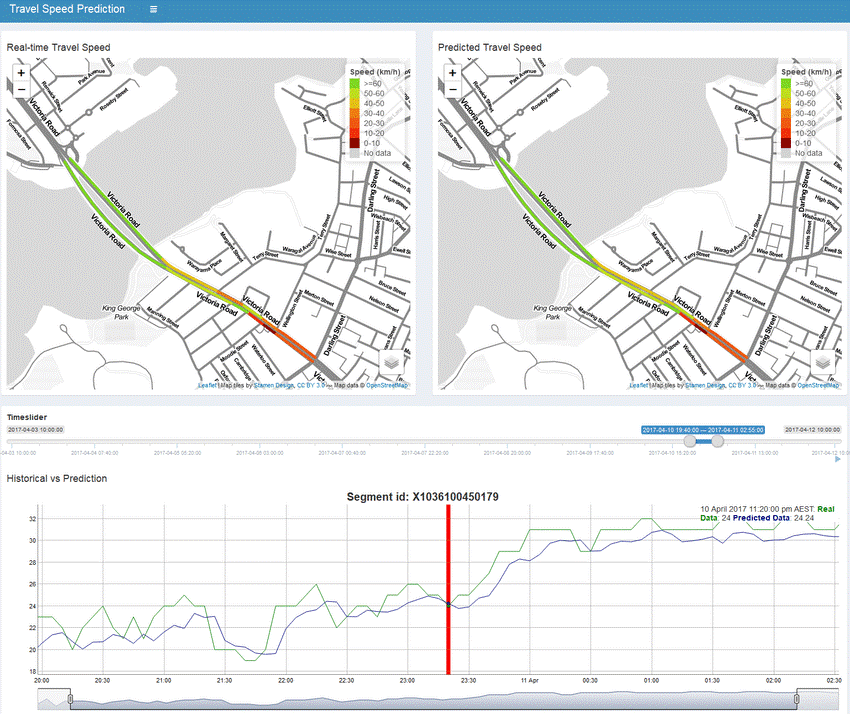
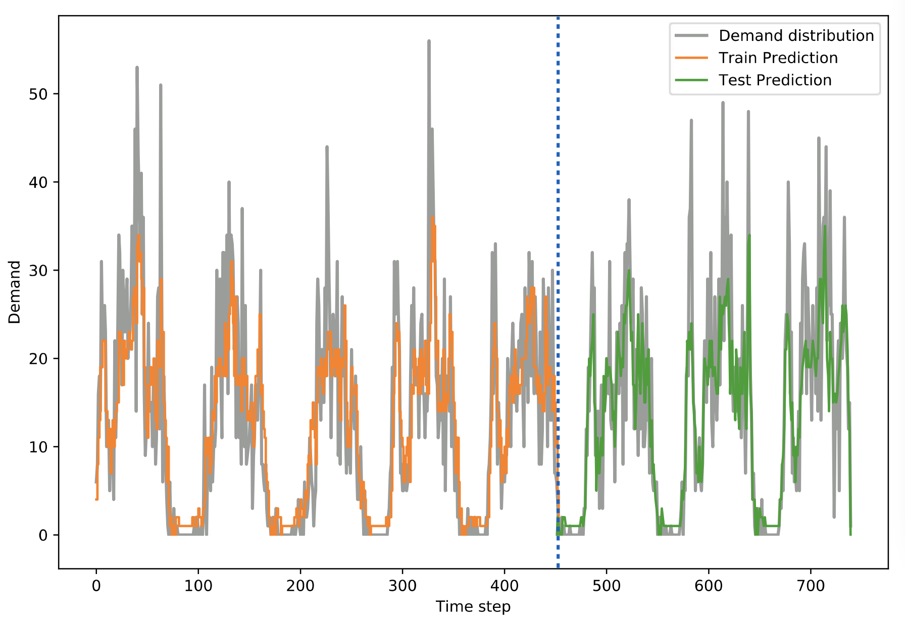
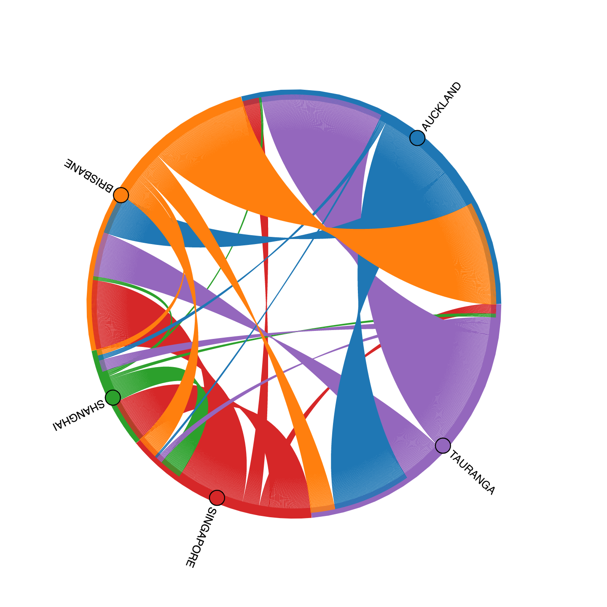
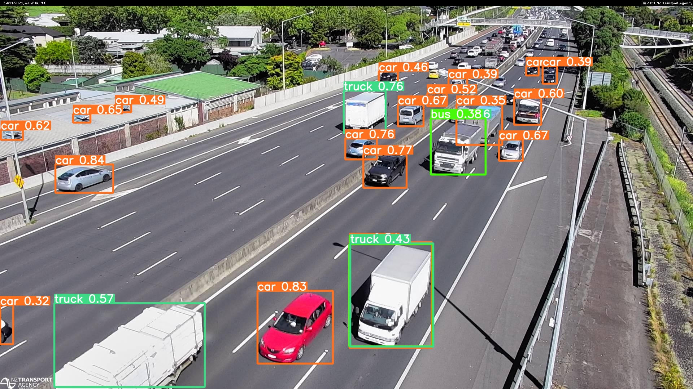

Data analytics for transport resilience
Minh Kieu
Lecturer
University of Auckland
These slides:
https://leminhkieu.github.io/p/MK-data-analytics.html
Passenger segmentation using Smart Card data

NSW's Smart Card data
We can identify people with similar travel behaviours who also live within an immediate vicinity
Identify mobility needs
On-demand transport
Evacuation
Data-driven prediction with big data
 Smart Card data in public transport
Google travel time data
Research funded by the CSIRO, Australia
Real-time transfer prediction

Individual evacuation modelling
Data-driven behavioural modelling
Case study: Auckland CBD
PhD research at the UoA
Analysis of NZ maritime data
Analyse the changes in visits to NZ ports before and after COVID
Collaboration work with Dr Nadia Trent, UoW
How can we use the existing CCTV system for AI-based traffic monitoring?
Traffic analysis from NZTA's traffic CCTV cameras
Real-time computer vision data collection on the CCTV footage at SH16
Extension: how to estimate the real-world trajectories and speed from just the 2D videos or images?
https://www.youtube.com/watch?v=8IJcoYMlR4YAI-based video processing for shared path safety
Take the coordinate conversion challenge to the next level!
Research assitant work at the UoA